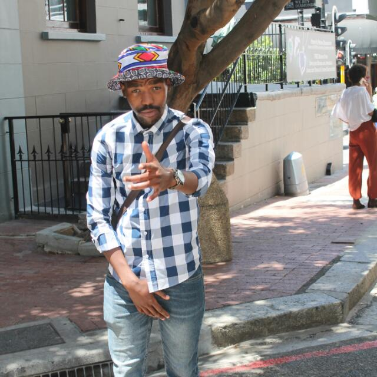

About Siphesihle Ntwanambi

He was born at Kraaifontein.
He also grow up in khayelitsha up until he was doing grade 5
He then study at Kraaifontein up until matric in 2013
He then started to be involve in community arts, drama, sport
and music. He is now an Entreprenuer, Event Orgarniser, DJ
Director, Motivational speaker and a Software Engenieer
He achieved all that through self development with the
help of organisations like Activate, Younglings and more